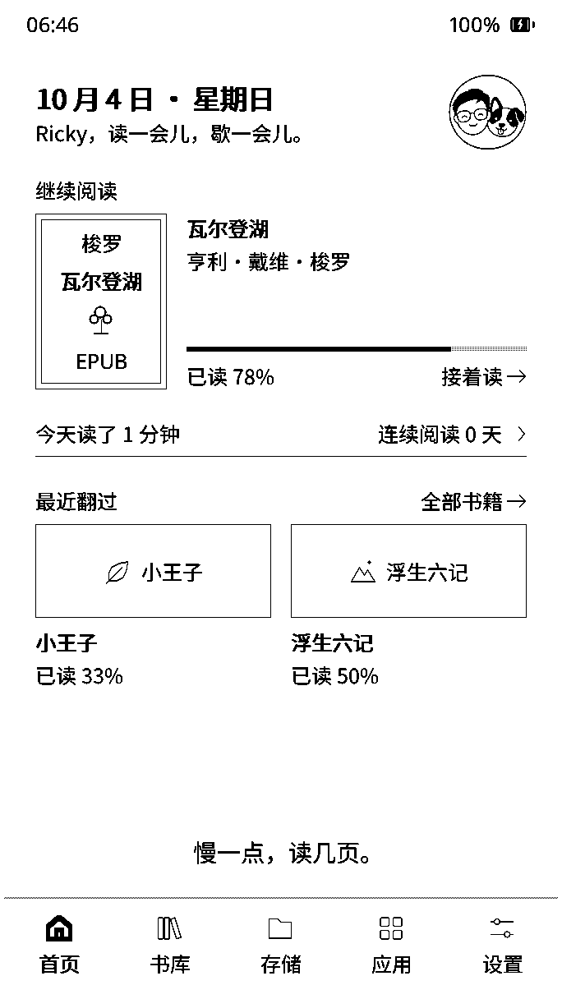

新的视觉方向
同一个 RickyOS，
两种打开方式。
去掉参考站的米绿配色、宋体大标题、倾斜卡片和圆环。
两版都保留真实系统界面，只比较网页构图，不影响现有刷机站。
A查看方案 B →
安静的产品官网
系统界面是主角。先展示阅读体验，再进入安装。
阅读，回到主角。
查看方案 A →B
直观的安装工作台
功能是主角。设备信息、风险提醒和安装进度集中呈现。
安装 RickyOS设备检查 ─ 备份校验 ─ 安装连接设备 →
两版均未调用 USB 串口，也未提供真实刷写按钮。可以组合 A 的产品首页和 B 的安装面板。